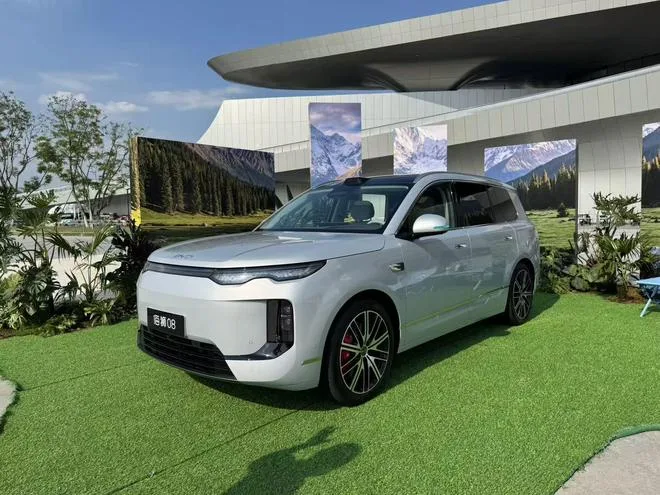
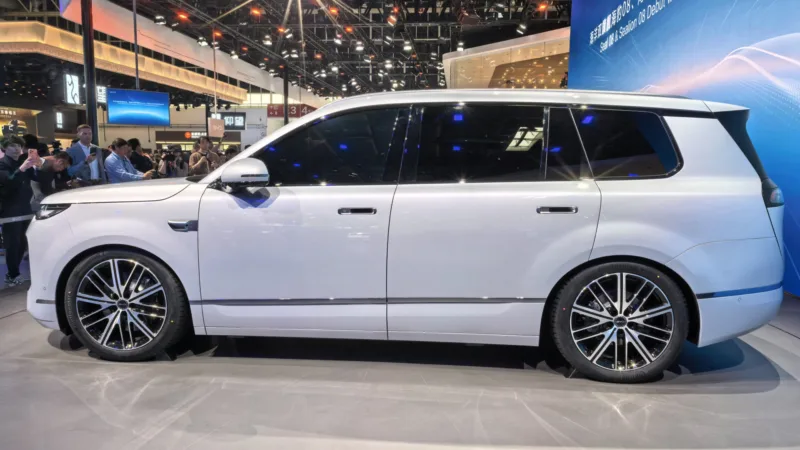
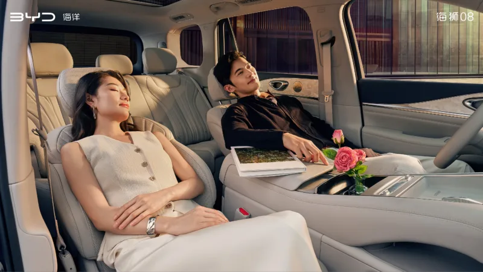
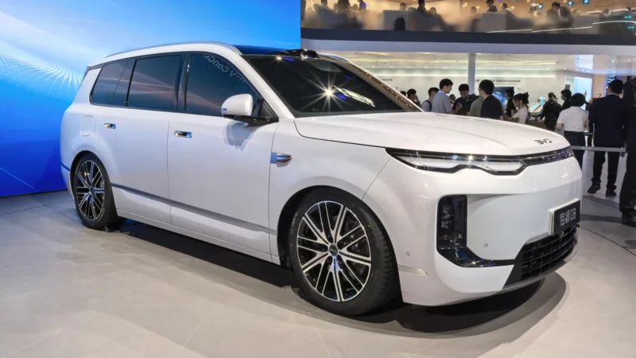

▲ BYD가 9월 2일 중국에서 출시하는 씨라이언8 양산형. 차명 배지에 '해사자08(海狮08)'이 선명하다 ⓒ carnewschina.com
BYD가 플래그십 SUV '씨라이언8(Sealion 08)'을 9월 2일 중국 시장에 정식 출시했다. 이 차의 가장 큰 화제는 크기다. 미니밴이 아니라 SUV인데도 전장이 현대 팰리세이드보다 길다. 여기에 후륜구동 상위 모델 기준 완충 시 900km(CLTC 기준)를 달리는 항속거리까지 더해지며, 국내에서도 소식이 빠르게 퍼지고 있다.
1. 사이즈 — 팰리세이드보다 긴 SUV, 그런데 미니밴이 아니다
씨라이언8의 전장은 5,115mm로, 현재 판매 중인 현대 팰리세이드(5,060mm, 캘리그래피 트림 5,065mm)보다 55mm 길다. 휠베이스도 3,030mm로 팰리세이드(2,970mm)보다 60mm 길게 잡혔다. 전폭은 1,999mm로 팰리세이드(1,980mm)보다 19mm 넓고, 전고는 1,800mm로 팰리세이드(1,805mm)보다 오히려 5mm 낮다. 차체 비례나 실내 구성은 미니밴에 가깝지 않고, BYD는 이 차를 어디까지나 '대형 SUV'로 분류하고 있다.
| 구분 | BYD 씨라이언8 | 현대 팰리세이드 |
|---|---|---|
| 전장 | 5,115mm | 5,060mm |
| 전폭 | 1,999mm | 1,980mm |
| 전고 | 1,800mm | 1,805mm |
| 휠베이스 | 3,030mm | 2,970mm |
| 좌석 구성 | 5·6인승 (7인승 없음) | 7·8인승 선택 |
2. 항속거리 — 900km는 CLTC 기준, 국내라면 달라진다

▲ 출시 행사 현장에 전시된 씨라이언8 양산형. 번호판 위치에 '해사자08(海狮08)' 배지가 선명하다 ⓒ carnewschina.com

▲ 2026년 4월 베이징 모터쇼에서 처음 공개된 씨라이언8 콘셉트 버전 측면. 양산형과 세부 디자인에 차이가 있을 수 있다 ⓒ carnewschina.com
가장 눈에 띄는 수치인 900km는 후륜구동 5인승 BEV 상위 트림에, 그것도 중국 CLTC 인증 기준으로 매겨진 값이다. 사륜구동 BEV는 800km, PHEV는 순수 전기 주행거리 기준 350~400km로 낮아진다. CLTC는 국내 환경부 인증이나 유럽 WLTP보다 실주행 조건에 관대한 편으로 알려져 있어, 같은 배터리로 국내에 들어온다면 인증 주행거리는 이보다 낮게 나올 가능성이 크다. 배터리는 BEV 기준 115.072kWh, PHEV 기준 55.843kWh급 2세대 블레이드 배터리이며, 800V 아키텍처를 기반으로 한 급속 충전을 지원한다.
3. 실내 — 5·6인승, 2열 캡틴시트에 무중력 모드까지

▲ 씨라이언8 콘셉트 버전 실내. 양산형 실내는 별도 사진으로 7월 말 공개됐다 ⓒ carnewschina.com
씨라이언8은 5인승과, 2열을 독립 캡틴시트로 바꾼 6인승 두 가지 좌석 구성으로 판매된다. 국내 일부 매체가 보도한 '2+2+3 배열의 7인승' 사양은 BYD의 공식 발표 및 카뉴스차이나(CarNewsChina)·CnEVPost 등 현지 매체 보도에서 확인되지 않는다. 6인승 사양의 2열에는 전동 레그레스트가 들어가고, 조수석에는 무중력 모드가 적용된다. 천장에는 대형 디스플레이가 배치되고, 스웨이드 소재 헤드라이닝과 가죽 시트, 스트리밍 룸미러 등 상위 세그먼트에서 볼 수 있는 사양이 다수 포함됐다.

▲ 6인승 사양의 2열 독립 캡틴시트. 무중력 모드로 등받이를 완전히 젖힐 수 있다 ⓒ BYD / carnewschina.com
4. 콘셉트 vs 양산형 — 4월과 9월, 두 번의 공개

▲ 4월 베이징 모터쇼 당시의 콘셉트 버전 전면. 램프 그래픽과 범퍼 디테일이 9월 양산형과 다소 다르다 ⓒ carnewschina.com
씨라이언8은 2026년 4월 베이징 모터쇼에서 콘셉트 형태로 먼저 공개됐고, 7월 말 양산형 실내가, 이어 9월 2일 정식 출시와 함께 최종 사양이 공개되는 순서를 밟았다. 콘셉트 버전과 양산형은 전체적인 실루엣은 유사하지만 헤드램프 그래픽, 범퍼 디테일, 휠 디자인 등 세부 요소에서 차이가 있다. 기사에 실린 사진 중 자주색 콘셉트카와 흰색 콘셉트카는 모두 4월 베이징 모터쇼 당시 모습이며, 실버 색상의 대표 이미지가 9월 출시를 앞둔 양산형이다.
5. 국내 출시는? — 아직은 물음표
체크포인트
- 씨라이언8은 중국 출시 일정만 확정됐을 뿐, 국내 출시 여부·시점·가격·보조금 대상 여부는 모두 미정이다.
- BYD는 국내에서 전시장과 판매 차종을 계속 확대하고 있지만, 대형 SUV급 모델의 국내 투입 계획은 아직 공식화되지 않았다.
- 900km라는 수치는 중국 CLTC 기준값이므로, 국내 도입 시에는 환경부 인증 주행거리로 다시 확인해야 한다.
BYD코리아가 최근 전시장을 빠르게 늘리며 국내 라인업을 다변화하고 있는 만큼, 씨라이언8과 같은 대형 SUV의 국내 상륙 가능성도 완전히 배제하기는 어렵다. 다만 현재로서는 중국 출시 이후의 반응과 BYD코리아의 후속 발표를 지켜봐야 하는 단계다.